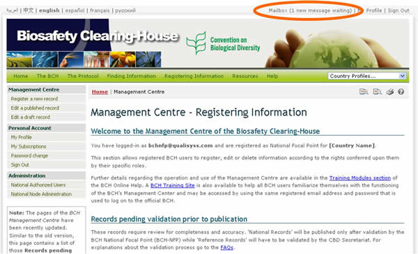
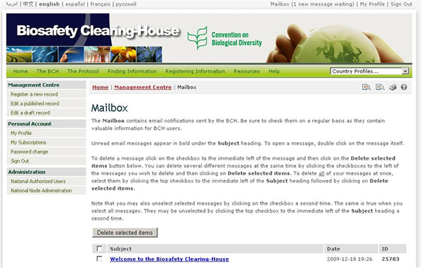

Todos los usuarios del CIISB tienen su propio buzón virtual, que se utiliza para la recepción de notificaciones enviadas por el CIISB. Tenga en cuenta que el buzón es “virtual” porque no tiene una dirección de correo electrónico real y no puede usarse para enviar correos electrónicos.


Mensajes nuevos: Los mensajes no leídos aparecen con el Asunto en negrita.
Leer mensajes: Para abrir un mensaje, haga doble clic en el título de mensaje en la lista. Una vez leído el mensaje, ya no aparecerá en negrita en la lista.
Guardar mensajes: Si quiere conservar un mensaje en su buzón virtual haga clic en el botón Return to mailbox (volver al buzón) que aparece debajo del mensaje.
Borrar mensajes: Si desea borrar el mensaje que está leyendo, haga clic en el botón Delete this message (borrar este mensaje) que aparece abajo. Si quiere responder el mensaje debe hacerlo desde una dirección válida de correo electrónico (si no tiene una dirección de correo electrónico, comuníquese con el CIISB para que lo ayude a usar el formulario de contacto).
Para borrar uno o más mensajes de la lista del buzón marque el/los casillero/s inmediatamente a la izquierda de los mensajes que desea borrar y luego haga clic en el botón Delete selected items (borrar mensajes seleccionados) al pie de la lista.
Puede recibir un mensaje de alerta automático en su buzón virtual si sucede alguna situación por la cual deba ser advertido. Por ejemplo si ingresa un registro que contiene palabras clave que no están incluidas en el vocabulario controlado del CIISB. Esto significa que ese registro podría no quedar clasificado correctamente y por lo tanto no se encontraría con búsquedas que utilizan el diccionario de referencia del CIISB. Por favor revise el registro lo antes posible y actualice las secciones que correspondan.